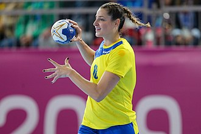
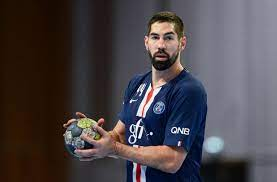

Hentbol başarıları ve başarısızlıklarıyla komplike,dünyada en çok takip edilen spor dallarından biri olduğunu bahsetmiştik.Şimdi gelin Hentbol denince akla gelen 3 isme bakalım.

Uluslararası Hentbol Federasyonu (IHF) tarafından 2011 ve 2015 yıllarında Dünyada Yılın Oyuncusu seçildi. Haziran 2008'de FC Barcelona'ya katıldı. Daha önce 2007'de Danimarka ligi şampiyonluğunu kazandığı Danimarka Hentbol Ligi takımı GOG ile oynadı. 2 Haziran 2010'da İspanya'da 2 yıl oynadıktan sonra AG København'da oynamak üzere Danimarka'ya geri döndü. Mikkel Hansen, Danimarka millî takımıyla Rio de Janeiro'daki 2016 Yaz Olimpiyatları'nda Olimpiyat, kendi ülkesi ve Almanya'nın ortaklaşa ev sahipliğinde gerçekleştirilen 2019 Dünya Erkekler Hentbol Şampiyonası'nda dünya ve Sırbistan'da düzenlenen 2012 Avrupa Erkekler Hentbol Şampiyonası'nda ise Avrupa şampiyonluğu kazandı. Ayrıca turnuvanın All-Star ekibine en iyi sol oyun kurucu olarak seçildi.[5] 2011'de İsveç'teki Dünya Şampiyonası'nda ikinci olan Danimarka takımının kadrosunda yer aldı. Turnuvanın genel olarak en iyi golcüsü oldu.

Eduarda Idalina "Duda" Amorim Taleska (d. 23 Eylül 1986), Brezilyalı hentbolcudur. Rus kulübü GK Rostov-Don'da oynamaktadır. Amorim, Uluslararası Hentbol Federasyonu tarafından 2014'te "dünyada yılın en iyi kadın hentbolcusu" seçildi. Handball Planet adlı internet sitesi tarafından yapılan bir seçimde, on yılın (2011-2020) dünyadaki en iyi oyuncusu seçildi. Bunun yanı sıra aynı oylamada halk oylamasıyla son on yılın en iyi savunma oyuncusu olarak kabul edildi.
